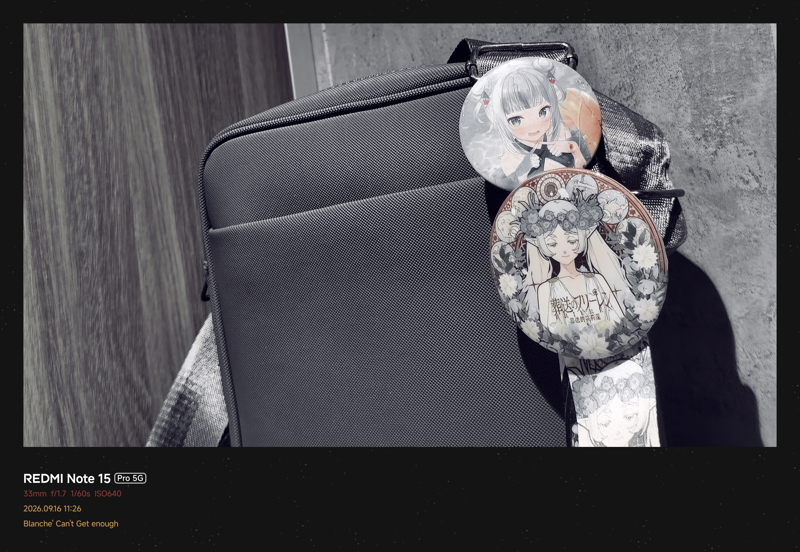

JANE'S CORNER
/ INTERNET DIVISION
SYSTEM ONLINE
[ RETURN TO INDEX ]
DOCUMENT //
JC-2026-003
CLASSIFICATION // PUBLIC
EDITION 01
+
PERSONAL REFLECTION / 003
Is it Wrong to Expect the Same Treatment?
AUTHOR //
JANE
DATE //
09 OCT 2026
TIME // UNRECORDED

FIG. 003 // ADD YOUR IMAGE CAPTION HERE.